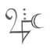

Ritual Grimoire
Hekate's Ladder

Kourotrophos SigilArcana
Wherein the Devotee may create a fetish for invoking Hekate by her epithets.
To help the Devotee travel to celestial or chthonic realms, a strand of beads and bones may be linked to create Hekate's Ladder, a fetish whose function is to form a ladder of thirty-three steps which the Devotee may climb to the sacred planes where the Crescent-Horned Queen resides. Each step of this Ladder is a traditional epithet of Hekate. As the Devotee touches each of the beads, she will call Hekate by one of her sacred names. Not only is the speaking of these epithets a transformative act, but if created mindfully with the intention to conjoin with Hekate, the Ladder's very construction becomes a sacred rite in and of itself.
Climbing Hekate's Ladder
Wherein the sacred epithets are revealed, and the order of recitation is set forth.
Once it has been created and consecrated, the Ladder is used in this way: take in hand the first bone, and recite the call below ("Hekate, Hekate, Hekate..."), then take the first bead and recite the first epithet, and then proceed to the second bead and say the second epithet, and so on. The Devotee may recite the epithets in Greek or English (or both), as it pleases her.
Hekate, Hekate, Hekate —
First Bone: Megali Thea, Megiste Titan! (Great Goddess, Greatest Titan!)
- Bead 1: Calleo Seh! (I call you)
- Bead 2: Clouthi Meou! (Hear me)
- Bead 3: Kleidzo Seh! (I invoke you)
- Bead 4: Khaira, Hekate! (Rejoice, Hekate!)
- Bead 5: Khaira, Vasilisa tis Stavrodromi (Hail, Queen of Crossroads)
- Bead 6: Brimo Trimorphos (Crackling Three-Face)
- Bead 7: Boukolos (Ox-Herder)
- Bead 8: Therebromon (Voice of the Beast)
- Bead 9: Agriope (Fierce Face)
Second Bone: Agroterra (Huntress)
- Middle Bead: Protou, oloi oi theoi tremoun (Before you, all gods tremble)
Third Bone: Khaira, Vasilisa tis Mavris Selinis (Hail, Queen of the Black Moon)
- Bead 10: Azostos (Ungirt)
- Bead 11: Speirodrakontozonos (Clad in Serpent Tresses)
- Bead 12: Thea Deinos, Thea Deinos, Thea Deinos (Goddess of Fear)
- Bead 13: Kratais (Strong One)
- Bead 14: Kore to Persi kai Asteria (Daughter of Destruction and Starry One)
- Bead 15: Kourotrophos (Nurturer of Youth)
- Bead 16: Zootrophos (Nurturer of All Life)
- Bead 17: Atalos (Compassionate One)
- Bead 18: Apotropaia (Diverter of Harm)
Fourth Bone: Aurobore (Devourer of Ghosts)
- Middle Bead: Protou, oloi oi theoi tremoun (Before you, all gods tremble)
Fifth Bone: Khaira, Anessa Eneroi (Hail, Queen of the Dead)
- Bead 19: Dadophoros (Torch-Bearer)
- Bead 20: Kleidophoros (Key-Keeper)
- Bead 21: Propylaia (She of the Gate)
- Bead 22: Enodia (She of the Way)
- Bead 23: Engoni to Krios kai Euribia (Granddaughter to Ram and Flowing Force)
- Bead 24: Skotia (Lover of Gloom)
- Bead 25: Phileremos (Lover of Empty Places)
- Bead 26: Phosphoros (Light-Bringer)
Sixth Bone: Noctiluna (Shining Face of the Night)
- Bead 27: Nictopolis Chthonie (Nightwalker of the Underworld)
- Bead 28: Fila Ton Skylon (Friend of Dogs)
- Bead 29: Skylakitin (Leader of the Pack)
- Bead 30: Soteira, Soteira, Soteira (Savior)
Final Step: Pantous Kosmou Kleidoukos (Great Key-Keeper of the Cosmos) — Engoni to sophos Koeos kai lampsi Phoebe (Granddaughter to wise Coeos and bright Moonlight)
Coin: Grasp the coin tightly, saying: "Hekate, I know that you are unknowable - and therefore I call you Apletos (Unknowable One). I know that you are unnamable - and therefore I call you Aphrattos (Unnamable One). And yet you are of the Night, so I call you Nyktia (She of the Night); invincible, so I call you Prytania (Invincible One); Rexichthon (Earth-Splitter), Hippochthon (Horse of the Earth); Pyrepeganyx (Fount of Fire); Borborophorba (Eater of Filth). O Rejecter of Nothing, reject not me, but favor the one who favors you."
Draw a drop of blood with a lancet, and touch it to the coin, saying: "There is blood upon the moon, there is blood upon your lips. There is blood upon the moon, there is blood upon your lips. There is blood upon the moon, there is blood upon your lips. O Lykaina (She-Wolf); Drakaina (Dragoness); Aimopotis (Blood-Drinker): look upon my offering with favor! As you would be fed, feed me - for your hunger and mine are one."
Blossom: Take the blossom in your hand and touch it to your bent brow, saying: "Hekate, if it please you, grant me this favor..." (State your desire.)
Key: Finally, take hold of the key and touch it to your heart, saying: "Hekate, I have a key within me." (Lift it, as an offering.) "This key do I give to you. Take it, and take me too. Guard and guide me in my time of transition, and lead me to where I am bound. Let me be, in this life and the next, your faithful Hound." Kiss the key thrice, then say: "Khaira, Hekate, Khaira, Hekate, Khaira, Hekate."
From Devotee to Adept
So ends the White Flame. Having contemplated the literal and arcane meanings of Hekate's twenty-seven epithets, and having learned their sacred gestures, sigils, purposes and praxes, and incorporated the same into the Hekate's Ladder, the Devotee has now become an Adept.
The next step requires the Adept to learn the sorcerous workings which separate the worshipper from the witch. What follows is a series of rites by which the Adept encounters Hekate's earth-forms, the goddesses with whom she is conflated, the gods that complement her function, the witches of the earth, and spirits of the Underworld. By reading aloud the ritual words set forth hereafter, the Adept further enlivens this book as a sentient servant of the Queen of Crossroads. And by performing the deeds herein, the Adept will gradually gain the experience and wisdom necessary to become a true Initiate of the Forked Path. And, too, she draws ever closer to her ultimate goal, which is to be, in this life and the next, a Hound of Hekate.